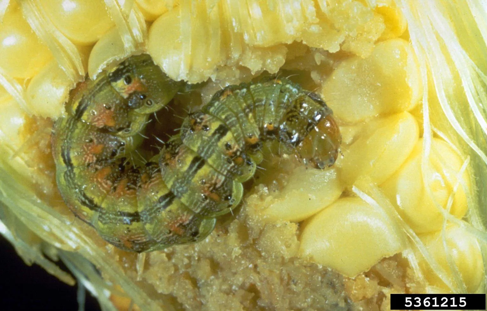
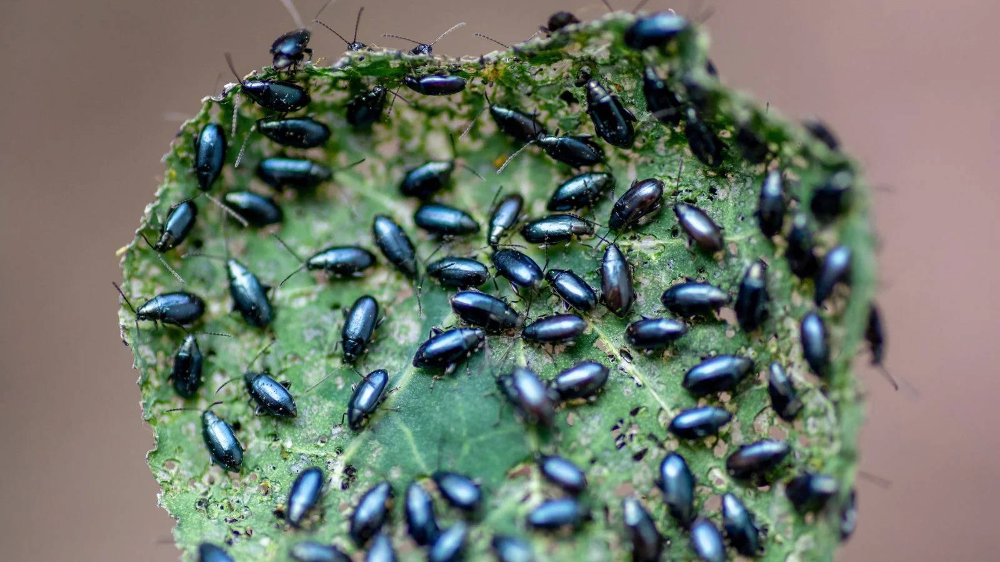
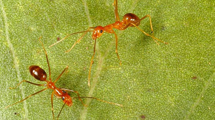
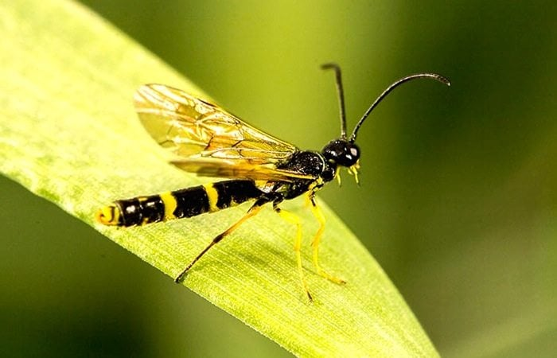
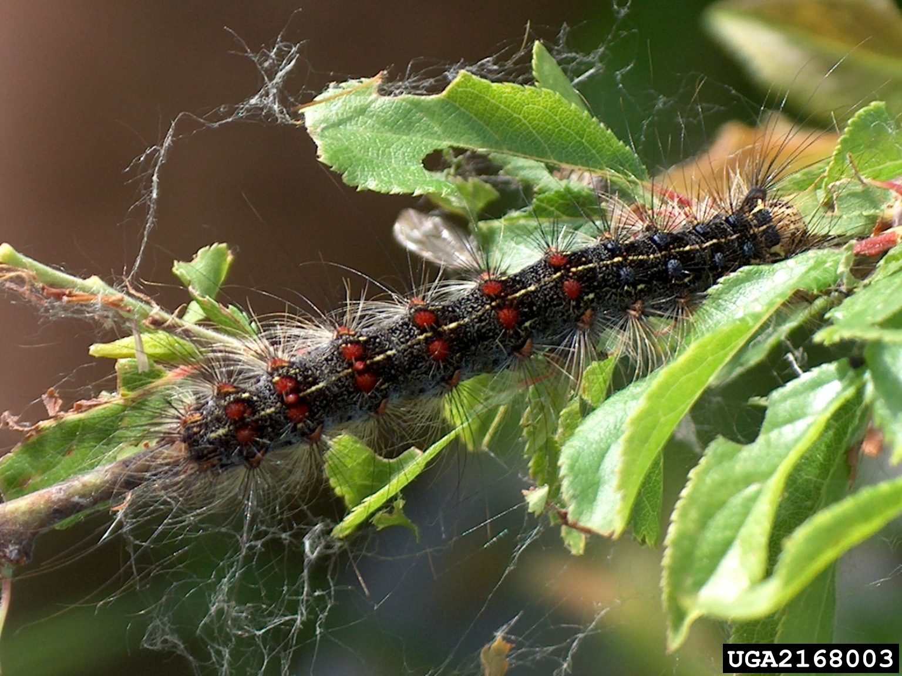

Pests

Aphid
(ပျပိုး)
Found on most plants in yards and gardens

Corn Earworm
(ပြောင်းစားပိုး)
Found in corn, tomatoes or cotton fields

Locust Swarms
(ကျိုင်းကောင်)
Found in aricultural crops like corn, cotton, oats, peanuts

Pea Beetle
(ပိုးတောင်မာ)
Found in pea plants and seeds such as broad beans and soybeans

Exotic Mite
(ပုရွက်)
found on a variety of plants

Grape Phylloxera
(စပျစ်ရွက်ဖုလုံး)
Found in many grape-growing regions globally

Zebra Chip
(အာလူးပိုး)
Found in crops including potato, tomato, carrot and chillies

Wheat Stem Sawfly
(လွှပိုး)
Found incultivated cereal crops

Asian Armyworm
(ဖျက်ပိုး)
Found in agricultural areas and fields where host plants are grown
Oak gall
(ဝက်သစ်ချဖုလုံး)
Found incultivated cereal crops
Willow shoot galls
(မိုးမခပင်ဖုလုံး)
Found incultivated cereal crops
Whiteflies
(ယင်ဖြူ)
Found incultivated cereal crops